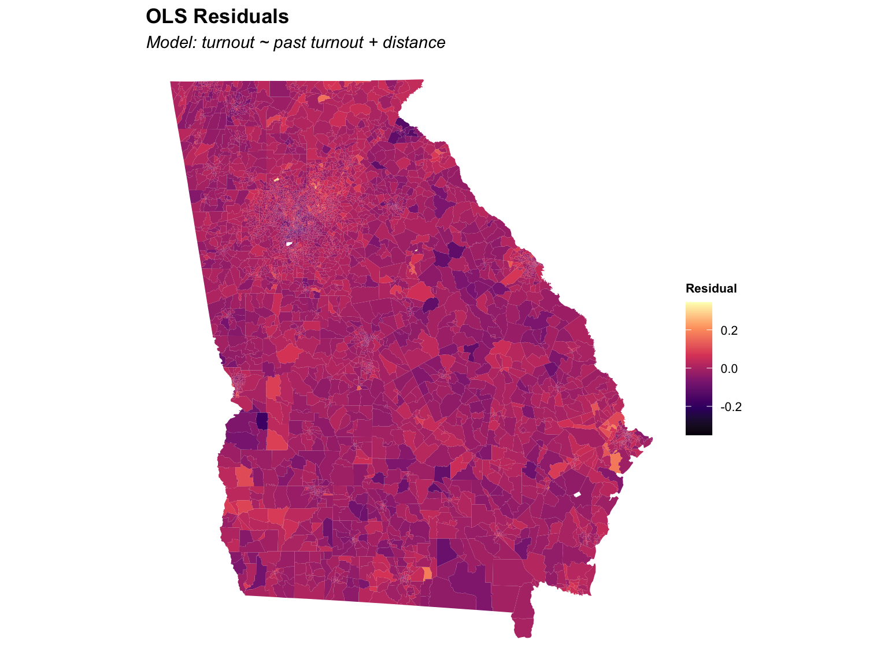

The table below compares four specifications in progression from naive OLS to the spatially-corrected IV model. Reading across columns reveals how the distance estimate changes as we account for confounding (controls), endogeneity (2SLS), and spatial dependence (spatial error).
Effect of BLM Protest Proximity on 2020 General Election Turnout
OLS (2018 only)
OLS (controls)
2SLS
Spatial Error
* p < 0.1, ** p < 0.05, *** p < 0.01
Unit of observation: census block group, Georgia. Outcome: share of registered voters turning out in the 2020 general election. Distance measured in miles from block group centroid to nearest 2020 BLM protest. Standard errors in parentheses. * p < 0.10, ** p < 0.05, *** p < 0.01.
Turnout 2018
1.238***
0.863***
0.874***
0.914***
(0.004)
(0.020)
(0.021)
(0.021)
Turnout 2016
1.096***
1.096***
0.935***
(0.022)
(0.022)
(0.024)
Turnout 2014
−0.673***
−0.652***
−0.590***
(0.020)
(0.021)
(0.022)
Turnout 2012
−0.243***
−0.258***
−0.107***
(0.016)
(0.017)
(0.019)
Turnout 2010
−0.086***
−0.107***
−0.191***
(0.017)
(0.019)
(0.021)
Distance from protest (mi)
−0.001***
−0.000**
−0.001***
(0.000)
(0.000)
(0.000)
Intercept
0.037***
0.015***
0.012***
0.014***
(0.002)
(0.002)
(0.002)
(0.002)
Num.Obs.
5525
5525
5525
5525
R2
0.949
0.977
0.976
R2 Adj.
0.949
0.977
0.976
RMSE
0.05
0.04
0.04
0.03
First Stage
The instrument (rainfall) must be strongly correlated with the endogenous variable (distance from protest) for 2SLS to be reliable. The first-stage F-statistic — reported below — should exceed 10; values below this threshold indicate a weak instrument problem.
**First-stage F-statistic: 463.54** (threshold for strong instrument: F > 10)
First Stage
* p < 0.1, ** p < 0.05, *** p < 0.01
Population density
−0.000***
(0.000)
% Non-Hispanic Black
−0.253***
(0.035)
Intercept
2.451***
(0.034)
Num.Obs.
5525
R2
0.201
F-statistic
463.540
Instrument Validity: Wu-Hausman Test
The Wu-Hausman test evaluates whether OLS is actually inconsistent — i.e., whether distance is truly endogenous. A small p-value rejects the null that OLS and IV estimates are equivalent, supporting the use of IV.
Wu-Hausman test statistic: **6.638** (p = 0.0100)
Spatial Autocorrelation in Residuals
If OLS residuals are spatially clustered, standard errors are underestimated and inference is unreliable. The maps below compare OLS vs. 2SLS residuals — spatial structure in residuals signals remaining spatial dependence not captured by the model.

Left: OLS residuals. Right: 2SLS residuals. Remaining spatial clustering in OLS residuals motivates the spatial error specification.
Left: OLS residuals. Right: 2SLS residuals. Remaining spatial clustering in OLS residuals motivates the spatial error specification.
Results from these tests determine whether to use a spatial lag model (missing spatially-lagged DV), a spatial error model (non-independent errors), or a Spatial Durbin model (both). Both lag and error statistics are significant, suggesting a Spatial Durbin specification is appropriate for the final model — a direction for future work.
Robustness
The following checks help assess the sensitivity of results:
Alternative control sets: Using only 2018 turnout vs. all five prior election years
Log vs. level distance:log(dist + 1) vs. dist in miles — addresses right-skew
County fixed effects: absorb county-level unobservables (requires sufficient within-county variation in rainfall)
These robustness specifications can be added to R/04-models.R following the established pipeline pattern.
Source Code
---title: "Results"subtitle: "OLS, IV, and spatial model estimates for Georgia"---```{r setup, include=FALSE}knitr::opts_chunk$set(echo =FALSE, message =FALSE, warning =FALSE)library(targets)library(modelsummary)library(ivreg)library(spatialreg)library(here)source(here("R/functions/model_tables.R"))ols_m1 <-tar_read(ols_m1)ols_m3 <-tar_read(ols_m3)first_stage <-tar_read(first_stage)reduced_form <-tar_read(reduced_form)iv_2sls <-tar_read(iv_2sls)sp_error <-tar_read(sp_error)lm_tests <-tar_read(lm_tests)```## Main ResultsThe table below compares four specifications in progression from naive OLS to the spatially-corrected IV model. Reading across columns reveals how the distance estimate changes as we account for confounding (controls), endogeneity (2SLS), and spatial dependence (spatial error).```{r main-table, results="asis"}model_table(list("OLS (2018 only)"= ols_m1,"OLS (controls)"= ols_m3,"2SLS"= iv_2sls,"Spatial Error"= sp_error ),output ="html",title ="Effect of BLM Protest Proximity on 2020 General Election Turnout",notes ="Unit of observation: census block group, Georgia. Outcome: share of registered voters turning out in the 2020 general election. Distance measured in miles from block group centroid to nearest 2020 BLM protest. Standard errors in parentheses. * p < 0.10, ** p < 0.05, *** p < 0.01.")```## First StageThe instrument (rainfall) must be strongly correlated with the endogenous variable (distance from protest) for 2SLS to be reliable. The first-stage F-statistic — reported below — should exceed 10; values below this threshold indicate a **weak instrument** problem.```{r first-stage}fs_fstat <-summary(first_stage)$fstatisticcat(sprintf("**First-stage F-statistic: %.2f** (threshold for strong instrument: F > 10)\n\n", fs_fstat[1]))first_stage_table(first_stage, output ="html")```## Instrument Validity: Wu-Hausman TestThe Wu-Hausman test evaluates whether OLS is actually inconsistent — i.e., whether distance is truly endogenous. A small p-value rejects the null that OLS and IV estimates are equivalent, supporting the use of IV.```{r wu-hausman}iv_diag <-summary(iv_2sls, diagnostics =TRUE)wh <- iv_diag$diagnostics["Wu-Hausman", ]cat(sprintf("Wu-Hausman test statistic: **%.3f** (p = %.4f)\n\n", wh["statistic"], wh["p-value"]))```## Spatial Autocorrelation in ResidualsIf OLS residuals are spatially clustered, standard errors are underestimated and inference is unreliable. The maps below compare OLS vs. 2SLS residuals — spatial structure in residuals signals remaining spatial dependence not captured by the model.```{r residual-maps, fig.show="hold", out.width="50%", fig.cap="Left: OLS residuals. Right: 2SLS residuals. Remaining spatial clustering in OLS residuals motivates the spatial error specification."}tar_read(map_resid_ols)tar_read(map_resid_iv)```## Lagrange Multiplier Specification Tests```{r lm-tests, results="markup"}print(lm_tests)```Results from these tests determine whether to use a spatial lag model (missing spatially-lagged DV), a spatial error model (non-independent errors), or a Spatial Durbin model (both). Both lag and error statistics are significant, suggesting a Spatial Durbin specification is appropriate for the final model — a direction for future work.## RobustnessThe following checks help assess the sensitivity of results:- **Alternative control sets:** Using only 2018 turnout vs. all five prior election years- **Log vs. level distance:** `log(dist + 1)` vs. `dist` in miles — addresses right-skew- **County fixed effects:** absorb county-level unobservables (requires sufficient within-county variation in rainfall)These robustness specifications can be added to `R/04-models.R` following the established pipeline pattern.